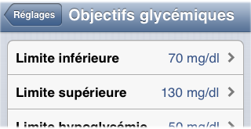
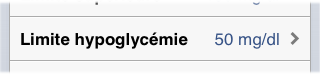
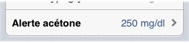

Réglages
Acceptez les conditions
Au premier lancement, un message décrivant les conditions d'utilisation s'affiche, et il faut appuyer sur le bouton "J'accepte ces conditions" pour pouvoir continuer.

Note: il faut faire défiler le texte jusqu'en bas pour que le bouton devienne actif.
Création d'un mot de passe
Afin de mieux protéger vos données personnelles, un message vous propose ensuite de crééer un mot de passe à 4 chiffres qui sera demandé à chaque lancement de l'application.
Si vous acceptez, un écran de création de mot de passe vous sera proposé.

Entrez simplement 4 chiffres et confirmez les. Si vous changez d'avis et ne voulez plus mettre de mot de passe, appuyez sur annuler ou laisser les champs vides.
Par ailleurs, vous pourrez à tout moment ajouter, supprimer ou changer un mot de passe à partir de l'onglet des réglages
Demande du mot de passe
Si vous avez mis un mot de passe, il vous est demandé à chaque lancement de l'application

Accès direct aux réglages
Il est demandé ensuite de procéder aux réglages.

Ces réglages doivent être réalisés sous la supervision de votre diabétologue ou médecin traitant. Tant que toutes les rubriques n'ont pas été remplies, il n'est pas possible d'utiliser le carnet ou les autres fonctions.
L’accès à la page des réglages est disponible à tout moment en tapant sur l’onglet du bas ‘Réglages’ :
Réglages diabète
Type de diabète
Renseignez d'abord le type de votre diabète, type 1 ou type 2
Insuline basale - Insuline rapide
Si vous êtes diabétique de type 2, vous devez indiquer si vous utilisez de l'insuline basale et/ou de l'insuline rapide
Bien entendu, si vous êtes diabétique de type 1, ces 2 types d’insuline sont considérés comme présents.
Unité de glycémie
La glycémie des lecteurs est en général donnée en mg/dl; changez cette unité seulement si votre lecteur fonctionne en mmol/l

Objectifs glycémiques
Ces seuils sont utilisés pour alerter sur la mesure d'acétone, mais aussi pour produire les diagrammes et tableaux de statistique. Vous pouvez ajuster :
les valeurs inférieures et supérieures que vous considérez comme normales. Ces valeurs sont de 70mg/dl et 180mg/dl par défaut
 la valeur limite que vous considérez comme une hypoglycémie. Cette valeur est de 60mg/dl par défaut
 la valeur de glycémie à partir de laquelle il faut vérifier la présence d'acétone dans le sang ou les urines. Cette valeur est de 250mg/dl par défaut

Horaires des repas
En tapant sur l’onglet « Horaires des repas », il vous est possible de configurer l’heure à laquelle vous prenez le petit-déjeuner, déjeuner, et dîner :
Vous pouvez modifier les horaires de vos repas afin que la case de glycémie sélectionnée à l’ouverture de Diabphone leur corresponde mieux.
Par exemple, si vous indiquez que vous prenez votre déjeuner à 13h, la case de glycémie « déjeuner +4h » sera automatiquement sélectionnée au lancement entre 16h et 18h, et non entre 15h et 17h avec un déjeuner à 12h.
Événements
En tapant « Événements », vous pouvez éditer la liste des événements que vous pouvez noter dans les cases de glycémie et d'insuline, comme 'marche', 'stress', etc.
Pour supprimer un événement, appuyez sur le signe '-'. Attention, vous ne pourrez pas supprimer un événement s'il est déjà présent dans le carnet.
Pour ajouter un événement, appuyez sur le signe '+', puis entrez son nom
Pour modifier le nom d'un événement, choisissez le dans la liste
Si vous utilisez de l'insuline...
Mode d'injection
Il faut indiquer le mode d'injection : injection (stylo ou seringue) ou pompe.
Schéma d'insuline basale
Si vous êtes traité par injection et que vous utilisez de l'insuline basale, il faut indiquer vos horaires d'injection et vos doses d'insuline habituels de la journée. Si vous êtes traité par pompe, indiquez votre ou vos débits de base (heure de début et débit horaire). Cette valeur peut être changée ensuite si nécessaire. L'appui sur "Schéma d'insuline-basale" conduit à l'écran suivant :
Appuyez sur "+" (1) pour ajouter un nouvel horaire avec une dose d'insuline ou un débit (pompe). Vos doses d'insuline et vos débits apparaissent en (2). Lorsque la liste est complète, appuyez sur "OK" (3). Vous pouvez également modifier ou supprimer des éléments de la liste en appuyant sur (4) ou (5).
À chaque ajout ou modification, l'écran suivant permet de spécifier l'heure et la valeur :
Si vous êtes diabétique de type 1
Pour pouvoir proposer un bolus de correction et pour les calculs d'ITF le cas échéant, il faut renseigner les 2 valeurs suivantes :
Sensibilité à l'insuline
Indiquez de combien diminue votre glycémie avec une injection d'une unité d'insuline rapide

Objectif de correction
Indiquez la valeur de glycémie que vous souhaitez atteindre lorsque vous faites un bolus pour corriger une hyperglycémie

Calcul de correction
L’interrupteur « Calcul de correction » active le calcul automatique de doses d’insuline de correction en fonction de vos objectifs glycémiques et de votre sensibilité à l’insuline.
La proposition d’une dose additionnelle de correction survient au moment des repas, selon le calcul suivant :
- Si la glycémie est inférieure à la limite d'hypoglycémie, ne propose rien car il faut d’abord réagir spécifiquement au problème d’hypoglycémie.
- Si la glycémie est comprise entre la limite d'hypoglycémie et la valeur basse de la norme de glycémie, propose une valeur négative, égale à l’écart entre la glycémie et cette valeur basse de la norme, divisé par la valeur de sensibilité à l’insuline. Par exemple si la glycémie est de 70mg/dl, la valeur basse de la norme est de 80 mg/dl et la sensibilité à l’insuline de 40mg/U, la valeur proposée sera égale à (70-80)/40 = -0,25U.
- Si la glycémie est entre la valeur basse de la norme de glycémie et l’objectif de glycémie, ne propose rien.
- Si la glycémie est supérieure à l’objectif de glycémie, propose une correction égale à l’écart entre la glycémie et l’objectif, divisé par la valeur de sensibilité à l’insuline. Par exemple si la glycémie est de 260mg/dl, l’objectif de 100mg/dl et la sensibilité à l’insuline de 40mg/U, la valeur proposée sera égale à (260-100)/40 = 4U.
Attention: Si vous avez reçu un autre bolus de correction dans les 4-5 heures précédant la proposition de dose de correction, la valeur proposée par le calculateur risque d’être trop élevée, d’où un risque d’hypoglycémie.
Si vous pratiquez l'ITF (Insulinothérapie fonctionnelle)
Formule de calcul
Choisissez votre formule de calcul habituelle dans la liste proposée :

Le calcul effectivement réalisé par la formule choisie est rappelé en bas :

Ratios insuline/glucides - ratios repas et ratios collations
Ajustez la valeur de vos ratios d’ITF pour chacun des 3 principaux repas ainsi que pour des collations éventuelles :

Lorsque vous tenterez d’accéder au carnet après avoir renseigné vos ratios, il apparaîtra un écran dont l’objectif est de vérifier que vous avez bien compris comment fonctionne le calcul d’une dose de bolus en fonction de la quantité de glucides absorbés pendant un repas, du ratio insuline/glucides correspondant à ce repas, et de la formule de calcul.

Sur cet écran, vous devez fournir pour chacun des 3 repas une quantité de glucides et la dose d'insuline correspondante, telle que vous pensez l'obtenir avec la formule et les coefficients que vous avez fournis. Par sécurité et afin d'empêcher un paramétrage incorrect, Diabphone n'activera pas l'assistant de calcul ITF tant que ces résultats ne seront pas corrects.
Modifier les aliments
Diabphone n'utilise pas une table alimentaire détaillée, mais classe plutôt les aliments en catégories et sous-catégories par pourcentage de glucides. Cela permet une saisie plus simple et facilite la mémorisation des pourcentages. Une liste d'aliments favoris peut néanmoins être créée pour simplifier la gestion des aliments les plus courants
→ Modifier une sous-catégorie
La liste des catégories de départ (féculents, fruits, etc.) n'est pas modifiable. Par contre, les sous-catégories le sont totalement. Sélectionnez d'abord la catégorie de départ :
La liste des sous-catégories apparaît; celle qui est qualifiée de 'standard' est surlignée en vert et apparaît en tête et les autres apparaissent par ordre de pourcentage croissant :
On peut ici créer, modifier ou supprimer une sous-catégorie. Si on souhaite par exemple créer une sous-catégorie de féculents à 30% de glucides, on clique sur 'créer' puis on choisit le pourcentage 30% :
On peut ensuite donner un nom à la sous-catégorie (elle a pour nom 'Féculents 30%' par défaut) et fournir des exemples d'aliments lui appartenant (par exemple: 'semoule')
En mettant le bouton 'catégorie standard' à 'ON', on peut faire de cette sous-catégorie celle qui apparaît en tête de liste, surlignée en vert.
→ Aliments favoris
En tapant sur 'Mes aliments', on accède à une liste (initialement vide) d'aliments favoris.

Pour créer un aliment, cliquez sur 'créer'; une page de saisie apparaît :
Il faut entrer le nom de l'aliment, et ajuster ensuite les roues en fonction du contenu nutritionnel d'une portion de l'aliment, pour finalement avoir le poids d'une portion et la quantité de glucides qu'elle contient. Parfois on ne possède que le pourcentage (g de glucides pour 100g): dans ce cas la quantité en gr de glucides est calculée automatiquement.
Taille des portions
On peut ici modifier le poids des portions par défaut pour chaque catégorie d'aliment :
Ici par exemple, la taille de la portion de féculents a été modifiée de 100g à 40g, de façon à permettre une saisie plus fine de la quantité
Code personnel
Le code affiché ici est un identifiant unique et anonyme de votre dossier; il est attribué au premier lancement et ne change plus ensuite. Il est utilisé notamment lors des transferts de données
Palettes de couleurs
Vous pouvez personnaliser l’apparence du carnet en tapant sur l’onglet « Palettes de couleurs » tout en bas de la page :
Conservez ensuite la palette qui vous convient le mieux :
Changer le mot de passe
Vous pouvez ajouter, supprimer ou changer un mot de passe en accédant à l'option tout en bas de l'onglet de réglages
Un écran de saisie apparaît:
Si vous souhaitez supprimer un mot de passe existant, laissez vides les 2 champs "nouveau mot de passe" et "confirmez mot de passe" et appuyez sur "ok": le mot de passe courant sera supprimé